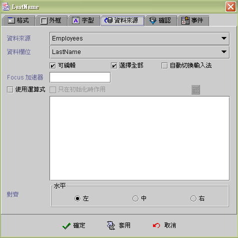

|

編輯方塊 (Edit component)
共同屬性 (common properties)
資料來源 (data source)
確認 (validation)
事件 (event)
運算式屬性存取
(formula get/set properties)
編輯方塊元件 (Edit)，通常使用於連結資料來源
(data
Source) 資料欄位 (data field) 的顯示 (display)、輸入 (input)、修改
(update) 的最基本元件。編輯元件亦可不連結資料欄位 (binding)，而是使用運算式
(formula)
顯示運算後的結果，當視窗資料來源移動資料記錄、存檔、刪除或其他元件值內含值改變
(changed) 時，運算式 (formula) 將會自動重新計算即時同步更新。可串接事件以反應各種商業邏輯
(business logical) 的運作，例如：當元件內含值修改時、按下
Enter 鍵時、元件 Gain Focus 時、元件 Lost Focus 時、雙擊滑鼠的左鍵時、按下滑鼠右鍵時，
則會啟動指定的相關事件程序。
資料來源
(data source)
-
資料來源 (data source)：資料來源。
-
資料欄位 (data field)：資料來源內的資料欄位。
-
可編輯 (editable)：是否允許使用者編輯。
-
選擇全部 (select all)：Focus 移至元件時，編輯方塊元件內的值，標示
(mark) 為全選狀態 (select all)。
-
自動切換輸入法 (enable input method)：Focus
移至元件時，編輯方塊元件自動顯示切換為，使用者作業系統目前所使用的輸入法
(input method)。
-
Focus 加速器
(accelerator)：按下所要的快速鍵。應用程式執行時，使用者須按住
"ALT" 鍵+快速鍵，可以將
Focus 移至元件。
-
使用運算式 (use formula)：使用運算式
(formula) 顯示運算後的結果，當視窗資料來源 (data source)
移動資料記錄、存檔、刪除或其他元件值內含值改變 (changed) 時，或以 SetProp() 運算式執行屬性 "revalidate" 時，運算式
(formula) 將會自動重新計算即時同步更新。
-
只有在初始化時作用 (initial only)：運算式
(formula) 只在視窗開啟後，計算運算式並將結果顯示於編輯方塊元件中，之後即不再自動計算更新
(compute and refresh)，設計師必須透過【設定元件內含值】的事件
(set component data event)，或重新計算以 SetProp()
的運算公式更新。
-
對齊 (alignment)：水平靠左中右對齊。

▲Top
確認 (validation)
確認 (validation) 是設計師根據資料連結 (data binding)
的欄位型別 (field
type) 或運算公式 (formula) 的結果值，設定樣版格式 (format
pattern)，jLIVE™ 系統會根據樣版格式 (format pattern)
將資料格式化(formatted)，在編輯元件讀取(非編輯)狀態時，將格式化的結果顯示於編輯元件中；編輯
(edit)
狀態時，則除了將格式化的結果顯示外，會要求使用者輸入與編輯樣版格式相符合的字串，除非清空輸入(blank)
否則無法離開編輯元件。
-
使用預設確認：不作任何確認限制。
-
內含值類別：根據資料連結
(data
binding) 的欄位型別(field type) 或運算公式 (formula)
的結果值類別，選擇要被格式化 (formatted) 的類別。選擇
Integer 或 Float
類別時，只允許使用者輸入數值資料，輸入錯誤時，系統不接受且發出
Beep 聲。使用資料連結 (data binding)
時，選取內含值類別必須注意需要與資料庫的欄位型別(field type) 一致，存取的資料才會正確。
-
讀取格式樣板 (read format pattern)：選擇顯示的格式樣版
(format pattern) 或自行編輯輸入格式樣版。參閱 格式樣版編輯
(format
pattern)。
-
編輯格式樣板
(edit format pattern)：選擇編輯的格式樣版 (format pattern)
或自行編輯輸入格式樣版。參閱 格式樣版編輯
(format pattern)。
-
限制文字長度：限制輸入文字的長度。
文字長度：以
Character (文字) 為計算單位，例如：中華民國2003年
，長度為 9。
Byte：以
Byte 為計算單位，例如：中華民國2003年
，長度為 14。
-
轉換大小寫：使用者輸入文字轉換大小寫。
-
不轉換 ：按使用者輸入。
-
轉為大寫 ：使用者輸入轉換成大寫。
-
轉為小寫 ：使用者輸入轉換成小寫。
-
字集：只允許中文全形字。限制使用者只能輸入 2
bytes character。應用於主機型式的資料庫系統。
-
數值：類別為數值資料時，是否限制允許輸入的最大值及最小值，超過範圍時，系統發出
Beep 聲且不接受輸入的數字元。當最小值的設定大於 0 或最大值設定小於 0 時，系統會暫時讓使用者輸入該數字，而於元件 Lost Focus
再行檢查，如果輸入數值不在範圍內，系統發出 Beep 聲且Focus 於該元件。例如：最小值 5 ，最大值 100，使用者可以輸入
1，但如果不再輸入即離開該元件，系統發出 Beep 聲且Focus 於該元件，直到輸入正確或清成空白。
-
最小值：設定時不可大於最大值。
-
最大值：設定時不可小於最小值。
-
曆法：
▲Top
事件 (event)
-
動作事件 (action event)：使用者按下 Enter
鍵時，即引發事件 (fire event)。
-
值變事件 (changed event)：當每次輸入值改變時，即引發事件
(fire event)，每一個按鍵輸入包括刪除鍵 (delete)
但不包括方向鍵，都會引發值變事件。
-
Gain Focus 事件：當 Focus
移入編輯方塊時，即引發事件
。
-
Lost Focus 事件：當
Focus 移出編輯方塊時，即引發事件
。
-
雙擊事件 (double clicked event)：當雙擊滑鼠的左鍵時，即引發事件。
-
按右鍵事件 (right clicked event)：當按下滑鼠右鍵時，即引發事件。

▲Top
運算式屬性存取
(formula get/set properties)
SetProp("元件名稱",
"屬性", 值) ：屬性設定。
SetProp("元件名稱",
"屬性",
值1, 值2)：屬性設定。
GetProp("元件名稱",
"屬性")：屬性讀取。
| Set
Properties |
屬性
(Properties) |
值1
(Value 1) |
值2
(Value 2) |
說明
(Descriptions) |
| enabled |
1 致能，0 失效 |
|
致能與失效。 |
| setfocus |
1 設定 Focus |
|
設定 Focus。 |
| visible |
1 顯示，0 隱藏 |
|
顯示與隱藏。 |
| repaint |
1 重繪，2
立即重繪 |
|
重繪。 |
| revalidate |
1 運算式重新計算 |
|
運算式重新計算。 |
| editable |
1 可編輯，0 唯讀 |
|
可編輯與唯讀。 |
| text |
文字串 |
|
設定文字串為其內含值。 |
| select |
起始位置 |
終止位置 |
將起始至終止位置的文字標示為選取，位置由
1 起算。 |
| caretpos |
游標位置 |
|
設定游標位置，位置由 1
起算。 |
| bg |
RGB(red, green, blue) |
|
背景顏色。值1 必須以Formula 的 RGB() 運算式給值。
|
| fg |
RGB(red, green, blue) |
|
前景顏色。值1 必須以Formula 的 RGB() 運算式給值。
|
| x |
正整數值 |
|
左座標位置。 |
| y |
正整數值 |
|
上座標位置。 |
| w |
正整數值 |
|
元件寬度。 |
| h |
正整數值 |
|
元件高度。 |
| xy |
正整數值 |
正整數值 |
左(Value1) 上(Value2) 座標位置。 |
| wh |
正整數值 |
正整數值 |
元件寬(Value1) 高(value2)度。 |
| Get
Properties |
| 屬性
(Properties) |
傳回值
(Return value) |
說明 (Descriptions) |
| isenabled |
1 致能，0 失效 |
致能與失效。 |
| isvisible |
1 顯示，0 隱藏 |
顯示與隱藏。 |
| iseditable |
1 可編輯，0 唯讀 |
可編輯與唯讀。 |
| text |
文字串 |
編輯方塊中內含值文字串。 |
| masktext |
文字串 |
編輯方塊中加上格式樣式的內含值文字串。 |
| edittext |
文字串 |
編輯方塊中顯示的文字串。 |
| caretpos |
整數值 |
游標位置，位置由 1 起算。 |
| length |
整數值 |
內含文字串長度。 |
| x |
整數值 |
左座標位置。 |
| y |
整數值 |
上座標位置。 |
| w |
整數值 |
元件寬度。 |
| h |
整數值 |
元件高度。 |
▲Top
Copyright © 2001~
2004 Probe Technology . All Rights Reserved.
Questions, comments,
and suggestions to Service@probe.com.tw
|